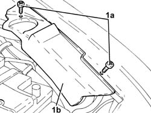
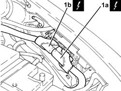
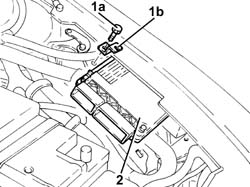

1056F82 CENTRALINA (UNICA) DELL''IMPIANTO INIEZIONE/ACCENSIONE - S.R.
- Path
- Procedures > 1056F82 CENTRALINA (UNICA) DELL''IMPIANTO INIEZIONE/ACCENSIONE - S.R.
- Kind
- repair procedure (removal / refitting; the operation number is the code)
- Applies to
- engines: 2.0 JTS; all production periods
- Interactive page
- https://sloeber94.github.io/elrnDB-aGt/en/#/125002615
Applies to: engines: 2.0 JTS; all production periods
 Removing
Removing
 Refitting
RefittingMake sure that the ignition key is in the OFF position, then disconnect the negative battery terminal (-).
Description | Connector | |
|---|---|---|
- | Battery |
1. Undo the bolts (1a) and remove the control unit protection (1b).

Applies to: engines: 2.0 JTS; all production periods
1. Disconnect the electrical connections (1a) and (1b) from the injection/ignition system control unit.
Description | Connector | |
|---|---|---|
1a | Engine management control unit |
Description | Connector | |
|---|---|---|
1b | Engine management control unit |

Applies to: engines: 2.0 JTS; all production periods
1. Unscrew bolt (1a) and remove bracket (1b) securing the injection/ignition system control unit.
2. Remove the injection/ignition system control unit by withdrawing from the mount.

Applies to: engines: 2.0 JTS; all production periods
Refitting
Removing.
Refit the injection/ignition system control unit and secure with the bolt.
Connect the electrical connections to the injection/ignition system control unit.
Place the control unit protection in its housing and secure it using the bolts.
Connect the negative battery terminal (-).